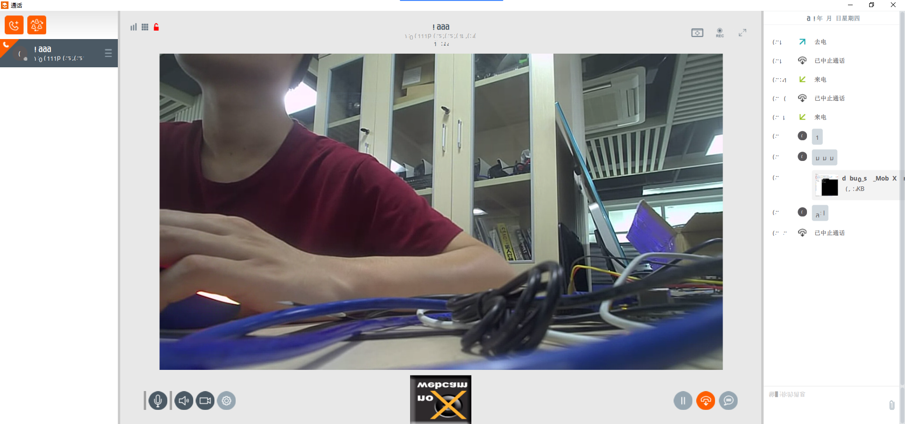

OpenSIP build¶
The system used this time is Ubuntu18.04 (if you use ubutu20.04 or Debian, etc., you may need to modify it slightly)
Compile opensips¶
Install the required environment pack
sudo apt-get install flex bison libncurses5-dev
#Install MySQL 5.7 version database
sudo apt-get install mysql-server
sudo apt-get install mysql-client
sudo apt-get install libmysqlclient-dev
git clone https://github.com/OpenSIPS/opensips.git -b2.2 opensips-2.2
Configuration before compilation:
Add db_mysql module function and save
Modify the installation directory PREFIX=/usr/local/opensips/
# unset C_INCLUDE_PATH #If the compiling object menuconfig is unsuccessful, try to execute this command
make menuconfig
---------------------------------------------
| |
| ---> Configure Compile Options |
| Compile And Install OpenSIPS |
| Cleanup OpenSIPS sources |
| Generate OpenSIPS Script |
| Exit & Save All Changes |
---------------------------------------------
Choose
Configure Compile Options
Configure Excluded Modules
[*] db_mysql #Check MySQL support module
Configure Install Prefix
/usr/local/opensips/ #It is recommended to modify the installation path, it is easy to uninstall opensips in the future
Compile:
make all -j6
make install
sips service configuration¶
2.1 Modify opensips.cfg¶
---------------------------------------------
| |
| Configure Compile Options |
| Compile And Install OpenSIPS |
| Cleanup OpenSIPS sources |
| ---> Generate OpenSIPS Script |
| Exit & Save All Changes |
---------------------------------------------
Generate OpenSIPS Script
Residential Script
Configure Residential Script #1. Configure script first
#Add to:
[*] ENABLE_TCP
[*] USE_AUTH
[*] USE_DBACC
[*] USE_DBUSRLOC
[*] USE_DIALOG
Save Residential Script #2. Save the configuration
Generate Residential Script #3. Generate script
Replace opensips.cfg: cp opensips-2.2/etc/opensips_residential_2021-5-6_7:21:6.cfg opensips.cfg
Modify the mpath variable in opensips.cfg: mpath=”/usr/local/opensips/lib64/opensips/modules/”
Modify listen to the machine IP: listen=udp:127.0.0.1:5060 # CUSTOMIZE ME listen=tcp:127.0.0.1:5060 # CUSTOMIZE ME
Check whether the configuration file syntax is passed
sbin/opensips -C
May 6 07:30:20 [6441] INFO:core:fix_poll_method: using epoll_lt as the IO watch method (auto detected)
Listening on
udp: 168.168.102.131 [168.168.102.131]:5060
tcp: 168.168.102.131 [168.168.102.131]:5060
Aliases:
May 6 07:30:20 [6441] NOTICE:core:main: config file ok, exiting...
2.2 Modify opensipsctlrc¶
SIP_DOMAIN=168.168.102.131
DBENGINE=MYSQL
#localhost
DBHOST=168.168.102.131
DBNAME=opensips
DBRWUSER=opensips
DBRWPW="opensipsrw"
DBROOTUSER="root"
2.3 Create opensips database¶
root@firefly:/usr/local/opensips/sbin# ./opensipsdbctl create
MySQL password for root:
INFO: test server charset
INFO: creating database opensips ...
INFO: Using table engine InnoDB.
INFO: Core OpenSIPS tables successfully created.
Install presence related tables? (y/n): y
INFO: creating presence tables into opensips ...
INFO: Presence tables successfully created.
Install tables for imc cpl siptrace domainpolicy carrierroute userblacklist b2b cachedb_sql registrant call_center fraud_detection emergency? (y/n): y
INFO: creating extra tables into opensips ...
INFO: Extra tables successfully created.
2.4 Add sip user¶
./opensipsctl add username password #Add user
./opensipsctl add 1000 1000 #Add an opensips user whose account and password are both ‘1000’
./opensipsctl add 2000 2000 #Add an opensips user whose account and password are both ‘2000’
./opensipsctl add 3000 3000 #Add an opensips user whose account and password are both ‘3000’
View the addition of the opensips database in MySQL
mysql -u opensips
show databases;
use opensips;
select * from subscriber;
Specific operation process:
mysql> show databases;
+--------------------+
| Database |
+--------------------+
| information_schema |
| mysql |
| opensips |
| performance_schema |
| sys |
+--------------------+
5 rows in set (0.00 sec)
mysql> use opensips;
Reading table information for completion of table and column names
You can turn off this feature to get a quicker startup with -A
Database changed
mysql> use opensips;
Database changed
mysql> select * from subscriber;
| id | username | domain | password | email_address | ha1 | ha1b | rpid |
| 1 | 1000 | 168.168.102.131 | 1000 | | 723edede4ecefd0b5762a9d17e32901a | e6c216c8db0d13ce066491f19164a12b | NULL |
| 2 | 2000 | 168.168.102.131 | 2000 | | 6d3515702693940f19e95e82be498e42 | 10299abcbca6bee63078df877918e557 | NULL |
| 3 | 3000 | 168.168.102.131 | 3000 | | 1d3a4a80dc09cecea466877fea882811 | 8255c1a861f98b431dc621166130c9d8 | NULL |
3 rows in set (0.01 sec)
3. Start the sips service¶
Start the opensips service: sudo service mysql restart
4. Test the remote communication function¶
Use linphone
Enter the opensips account address Account number: 1000 Password: 1000

Test Results: It can carry out video, voice calls, text message transmission and file transmission.
FAQ¶
Can’t connect to MySQL server on ‘168.168.100.178’ (111) root@jinchengubuntu-VirtualBox:/usr/local/opensips/sbin# ./opensipsdbctl create MySQL password for root: INFO: test server charset mysql: [Warning] Using a password on the command line interface can be insecure. ERROR 2003 (HY000): Can’t connect to MySQL server on ‘168.168.100.178’ (111) mysql: [Warning] Using a password on the command line interface can be insecure. ERROR 2003 (HY000): Can’t connect to MySQL server on ‘168.168.100.178’ (111) WARNING: Failed to get the available and used character sets
Comment code
root@jinchengubuntu-VirtualBox:/etc/mysql# grep "bind-address" * -nR
mysql.conf.d/mysqld.cnf:43:bind-address = 127.0.0.1
sudo service mysql restart